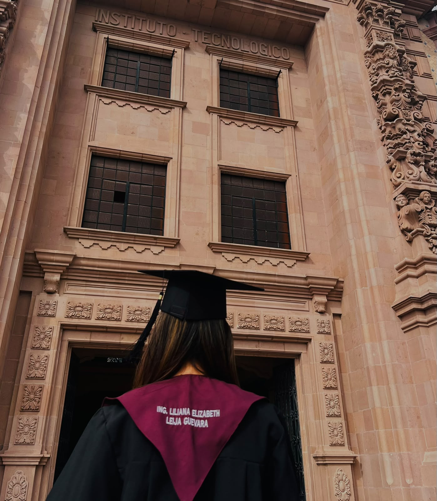
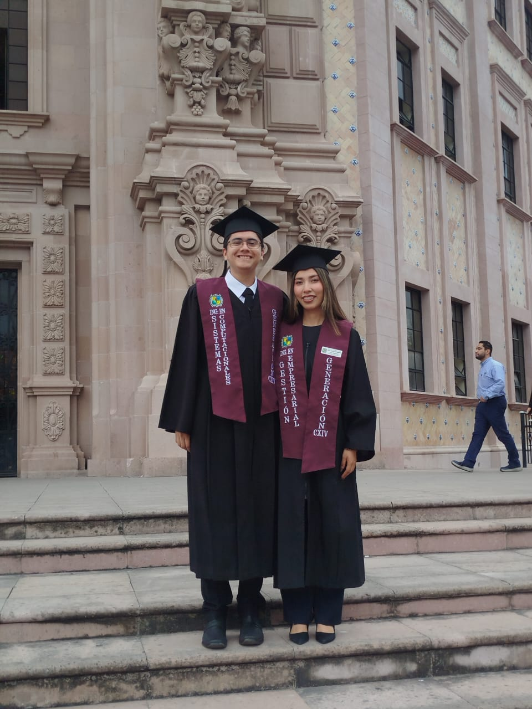
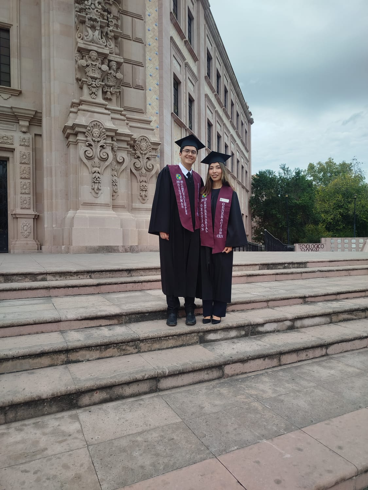
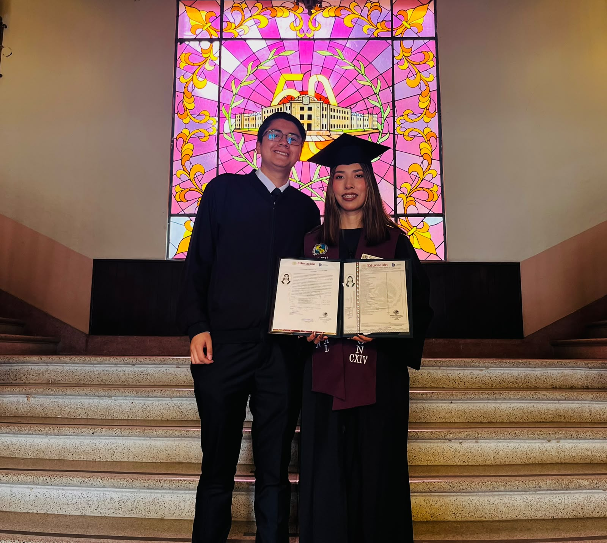
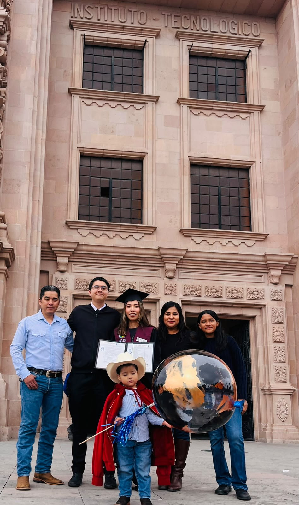
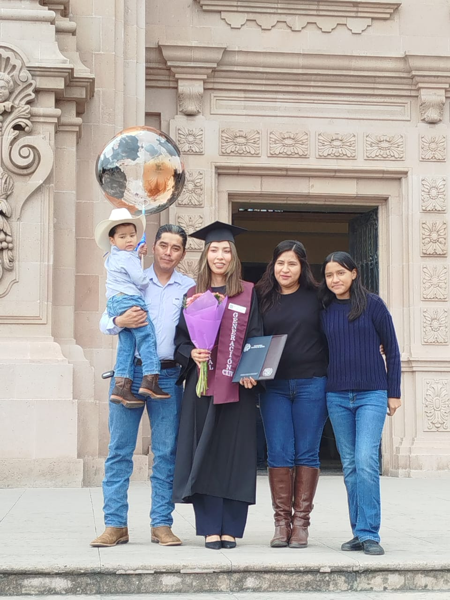
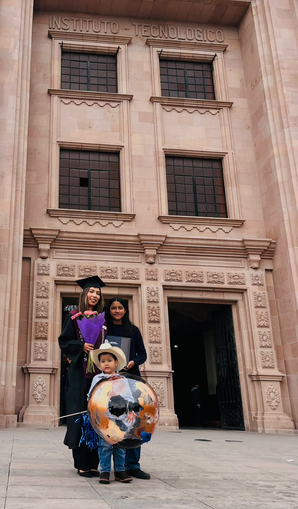
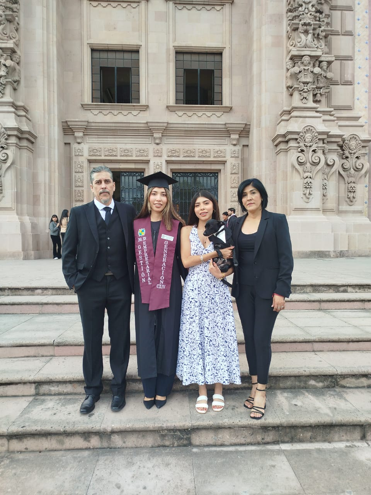

Mi Graduación
Tal vez finalizó una etapa, pero a la vez comienza una completamente diferente, y te prometo que será muy hermosa, lleno de momentos inolvidables, lindos y tan hermosos.
Muchísimas felicidades en este día, mi corazón hermoso. Sé que es un día único y, por supuesto, inolvidable, mi amorcito hermoso, porque ya eres una lobita graduada y titulada, ya eres una ingeniera. Cada esfuerzo, cada lágrima y cada desvelada valió la pena, porque no hubo materia, mi corazón hermoso, que no hayas pasado con la mejor calificación. También sé que eres muy inteligente, capaz de hacer cualquier cosita y tan apasionada por aprender cositas nuevas, jiji. Sé que, dondequiera que estés, darás lo mejor de ti, aprenderás muchísimas cositas más y se quedarán maravillados porque todito lo que haces siempre es lo mejor. Eres una mujer exitosa, llena de vida y con miles de metas que quieres cumplir, y que por supuesto se harán realidad porque llegarás muy lejos.
Hoy son solo recuerdos que llevarás contigo toda la vida, mi corazón, porque no dejarán de ser hermosos, maravillosos e increíbles, mi chiquilla. Quédate siempre, mi corazón, con todo lo bueno, hasta de los momentos malos. Sé que hubo de todo un poquito en estos años, miles de aventuras, risas tontas, dificultades y muchas cosas más que quedarán en la historia.
Lleva siempre en tu corazón a aquellas personas que, si bien ya no están, nunca dejaron de creer en ti. Y recuerda, guapa: siempre te van a cuidar sin importar lo que pase. Hay gente, mi corazón, y me incluyo a mí, que jamás dejaremos de creer en tus capacidades, en tus ganas de seguir adelante y, por supuesto, que apoyaré siempre los sueños que tengas en esta vida. Sigamos festejando cada meta, logro y sueño que día a día cumples. Mi corazón hermoso, eres una grandiosa amiga, hija, novia y, por supuesto, una maravillosa mujer de la que siempre estaré orgulloso y a quien admiro con todo mi corazón. Eres la mejor del mundo. Levanta la cabeza en lo más alto y jamás te olvides de vivir mi corazón, para ser feliz, para hacer lo que más te guste y simplemente divertirte como solo tú lo haces. Te amo con todito mi corazón, mi amorcito hermoso ❤️







